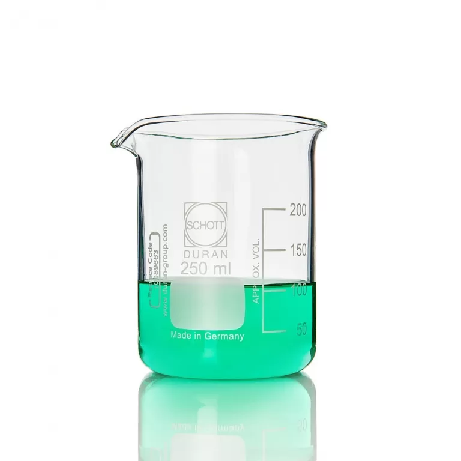
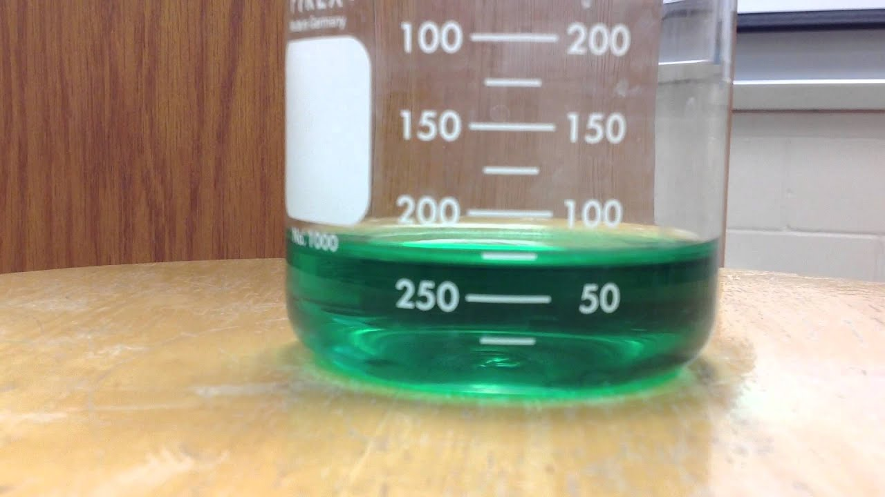

A beaker is device used to measure the volume of a liquid In order to accurately measure the volume, you read the number at the bottom of the meniscus; however, as beakers are typically wider than graduate cylinders, the miniscus is less pronounced. Beakers are used to measure larger volumes of liquid and are less accurate than graduated cylinders.

Read the volume for the beaker below. Answer the questions on your lab report.
